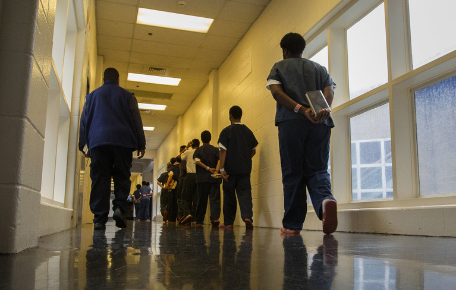

Second in the series: kids on the run, trapped in cells
Problem
Washington’s 20-year-old laws for intervening with truants and runaways send troubled youths to juvenile court, where services are often lacking. Washington leads the nation in detention for these non-criminal "status" offenses.
Solution
End the use of detention for status offenses, and create a robust alternative focused on early intervention.
Editorial
State needs to divert resources for jailing homeless youths to prevention
Over the past eight years, the state has reduced youth-shelter beds and closed treatment centers and crisis residential facilities, which can be a lifeline for children and their parents. The lack of those services hollowed out the promise of the Becca laws.
